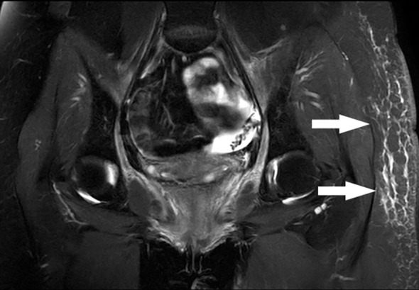
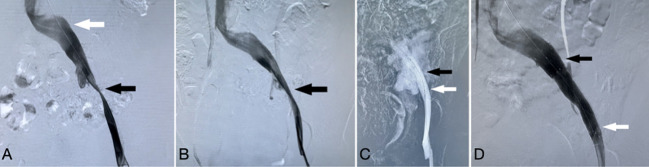
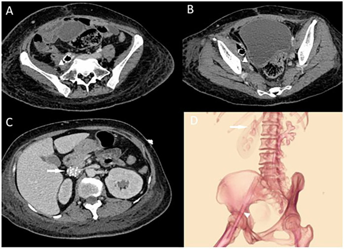

6709 — Hẹp tĩnh mạch chậu – đùi do xạ: vì sao phù chân xuất hiện MUỘN sau xạ tiểu khung, khi nào stent, và vì sao nong quá tay làm vỡ tĩnh mạch
Tags: pattern:hep-tinh-mach pattern:tac-tinh-mach pattern:phu-chi pattern:trong-truong-chieu pattern:xo-hoa vung:chau vung:chi-duoi anatomy:he-tinh-mach-chau-dui protocol:sieu-am-Doppler protocol:MRV protocol:chup-tinh-mach protocol:IVUS
Mức chắc chắn (certainty): tổng hợp y văn (literature synthesis) — ghép ca nữ 34 tuổi xạ toàn khung chậu 50 Gy/25 phân liều vì ung thư cổ tử cung, phù chân trái 3 tháng sau xạ, hẹp tĩnh mạch chậu ngoài, stent 14 mm rồi vỡ tĩnh mạch khi nong sau stent, cứu bằng stent có màng (Front Oncol 2023, PMCID PMC10235677, CC BY), ca nữ 43 tuổi nhiễm stent tĩnh mạch chậu sau xạ, ổ mủ quanh stent + rò đại tràng (Front Cardiovasc Med 2025, PMCID PMC12066436, CC BY), loạt 38 bệnh nhân stent tĩnh mạch chủ–chậu do u chèn ép (CVIR Endovasc 2024, PMCID PMC10957860, CC BY), 11 bệnh nhân phù bạch mạch bị chẩn đoán nhầm là hẹp tĩnh mạch chậu và đặt stent (PLoS One 2025, PMCID PMC12533920, CC BY) và bài tổng quan biến chứng stent tĩnh mạch sâu (Cardiovasc Intervent Radiol 2024, PMCID PMC11621186, CC BY). Không có ca do nhóm tự chụp.
Kịch bản thực hành (ghép từ các ca trên, không phải ca nguyên văn): nữ 34 tuổi, ung thư cổ tử cung đã mổ + xạ toàn khung chậu 50 Gy/25 phân liều cách đây 1 năm. Ba tháng sau xạ, phù tăng dần chân trái, nặng nhất ở đùi; không đau ngực, không khó thở. Siêu âm: không huyết khối tĩnh mạch sâu, nhưng vận tốc tĩnh mạch đùi chung giảm; MRI khung chậu: không tái phát u, không khối chèn ép, chỉ phù dưới da đùi trái. Câu hỏi: phù này là di chứng xạ "không chữa được", phù bạch mạch, hay hẹp tĩnh mạch chậu — và nếu đặt stent thì làm sao không làm vỡ tĩnh mạch? Bài chốt bốn quyết định: (1) phù một bên sau xạ tiểu khung là bệnh cảnh có 5 nguyên nhân chồng lấp — xơ tĩnh mạch do xạ, u/hạch chèn ép, lymphocele, huyết khối sau viêm, và phù bạch mạch — phải phân biệt bằng siêu âm + MRI + chụp tĩnh mạch, không được mặc định "di chứng xạ"; (2) hẹp do xạ là hẹp CỐ ĐỊNH, DÀI, HỒI PHỤC sau nong (recoil), khác hẹp do chèn ép mềm; (3) stent là điều trị hiệu quả nhưng tĩnh mạch đã xạ mất tính đàn hồi — nong sau stent quá tích cực có thể vỡ tĩnh mạch, sốc mất máu, nên cần stent phủ sẵn và nong bóng "dừng đúng lúc"; (4) đặt stent mà không chứng minh được hẹp có ý nghĩa huyết động sẽ không giảm phù — 11/11 bệnh nhân phù bạch mạch bị stent đã không đỡ hoặc tái phát trong 3 tháng. Nối 6707 – Bệnh động mạch ngoại biên do xạ (mặt động mạch của cùng trường xạ), 1670 – Rò động mạch chậu – niệu quản sau xạ, 1767 – Phù bạch mạch đầu cổ sau xạ, 1858 – Ghép hạch bạch huyết (VLNT), 3103 – Rò trực tràng – niệu đạo sau xạ trị tiền liệt tuyến.
1. Tổng quan bệnh học – cơ chế hình ảnh: vì sao tĩnh mạch đã xạ "không chịu nong"
- Dịch tễ (epidemiology): hẹp tĩnh mạch chậu do xạ hiếm hơn nhiều so với tổn thương động mạch cùng vùng; y văn chủ yếu là ca bệnh và loạt nhỏ, trong khi bệnh động mạch chậu–đùi do xạ đã có tổng quan hệ thống 25 nghiên cứu/43 ca (bài 6707). Vì vậy không có con số tần suất đáng tin — điều cần nhớ là bệnh có thật, xuất hiện muộn, và bị bỏ qua vì "phù sau xạ là bình thường" (PMC10235677).
- Mô bệnh (pathology): xạ gây xơ hóa cả ba lớp thành mạch, thay thế lớp áo giữa bằng mô xơ, xơ hóa lớp áo ngoài và mô quanh mạch (periarterial/perivenous fibrosis); trên động mạch, hình ảnh này không phân biệt được với xơ vữa về mặt mô học (PMC10235677 dẫn y văn). Ở tĩnh mạch, cơ chế được giả định tương tự vì cùng là tổn thương tế bào nội mô do bức xạ — nhưng thành tĩnh mạch mỏng, áp lực thấp, không có lớp cơ chắc, nên hệ quả khác: hẹp cố định + mất tính đàn hồi, không có "mảng xơ vữa" để bóc.
- TẠI SAO phù xuất hiện muộn và một bên: tĩnh mạch chậu là đường thoát duy nhất của chi dưới; khi lòng hẹp, áp lực tĩnh mạch mao mạch tăng → theo phương trình Starling, dịch thoát vào mô kẽ nhiều hơn, vượt khả năng dẫn lưu bạch mạch → phù. Vì xơ hóa tiến triển nhiều tháng đến nhiều năm, phù xuất hiện sau một khoảng trễ; trong ca chỉ điểm, phù bắt đầu 3 tháng sau khi kết thúc 50 Gy. Phù một bên, ở đùi là dấu hiệu định khu tĩnh mạch chậu ngoài, không phải phù toàn thân.
- TẠI SAO đau khi nong là dấu hiệu cảnh báo: trong ca chỉ điểm, bệnh nhân đau dữ dội khi nong tĩnh mạch chậu ngoài bằng bóng 12 mm ở 8 atm, trong khi nong tĩnh mạch chậu chung không đau và không có "eo bóng" (balloon waist). Đau dữ dội khi bơm bóng trên thành tĩnh mạch xơ, mỏng báo hiệu căng quá mức — vài phút sau, khi nong lại 12 mm ở 7 atm sau khi đặt stent 14 × 80 mm, tĩnh mạch vỡ: mạch 120–140 lần/phút, huyết áp 70–90/40–60 mmHg, thoát thuốc trên chụp mạch (PMC10235677).
- TẠI SAO phải có "kế hoạch vỡ": tĩnh mạch chậu đã xạ không co lại như động mạch và không có mô đàn hồi đỡ, nên khi vỡ, chèn bóng (balloon tamponade) chỉ cầm tạm; biện pháp quyết định là stent có màng (covered stent) đặt bên trong stent rỗng. Ca chỉ điểm: bóng 4 atm cầm máu tạm, sau 30 phút vẫn thoát thuốc → đặt stent phủ 13,5 × 60 mm trong stent cũ → cầm máu; ngày 3 hemoglobin 94 g/L, CT có máu tụ sau phúc mạc; xuất viện ngày 8, phù hết hoàn toàn lúc 6 tháng, tĩnh mạch thông (PMC10235677).
- TẠI SAO cần IVUS: chụp tĩnh mạch chỉ thấy lòng chứa thuốc, không thấy thành dày, dây xơ (synechiae), cựa (spurs), van dính, vách trong lòng và chèn ép từ ngoài — IVUS cho tiết diện thật để chọn cỡ stent và xác nhận stent áp sát thành. Đây là lý do các khuyến cáo dùng IVUS chọn lọc cho mọi ca nghi hẹp tĩnh mạch chậu (PMC10235677).
- Ngưỡng kỹ thuật (quantitative, theo y văn stent tĩnh mạch): hẹp cố định > 60% là ngưỡng hợp lý để đặt stent; stent lớn hơn đường kính tĩnh mạch 1–2 mm; cỡ tham chiếu tĩnh mạch chậu chung 14–16 mm, chậu ngoài 12–14 mm, đùi chung 10–12 mm; di lệch stent 0,17%, gãy stent 0–3,3%, biến cố bất lợi nặng 1,2–6,5%, biến chứng tại chỗ chọc tới 5%, huyết khối trong stent cao nhất trong 2 tuần đầu (PMC11621186).
2. Mẫu hình + chẩn đoán phân biệt theo cơ chế (gamut)
- Mẫu hình chính: hẹp dài, nhẵn, cố định ở tĩnh mạch chậu ngoài/chung, hồi phục ngay sau nong (recoil), không có khối chèn ép, không huyết khối cấp, kèm tuần hoàn bàng hệ qua tĩnh mạch chậu đối bên/sinh dục; phù một bên tăng dần nhiều tháng sau xạ.
- Gamut theo cơ chế:
- Xơ tĩnh mạch do xạ (intrinsic radiation venopathy): đúng trường chiếu, không khối, MRI âm tính với u, hẹp cố định.
- Chèn ép từ ngoài do u/hạch tái phát: khối thấy trên MRI/CT, hẹp lệch trục, có thể kèm huyết khối; trong loạt 38 ca u chèn ép, 57% có huyết khối tĩnh mạch sâu kèm theo (PMC10957860).
- Lymphocele sau nạo hạch: ổ dịch bờ mỏng, không ngấm thuốc, chèn tĩnh mạch chậu; có thể kèm xạ — 6 ca sau mổ phụ khoa ± xạ đã được stent và giảm triệu chứng (PMC8562170).
- Huyết khối sau viêm/bệnh lý tĩnh mạch hậu huyết khối (post-thrombotic syndrome): tiền sử DVT, tĩnh mạch không đều, dày thành, van hỏng; khác hẹp xơ đơn thuần.
- Phù bạch mạch (lymphedema): phù mu bàn chân, không mất hố ấn muộn (Stemmer sign), không hẹp có ý nghĩa huyết động; xạ tiểu khung vừa gây xơ tĩnh mạch vừa phá hủy bạch mạch → phù hỗn hợp là quy luật, không phải ngoại lệ.
- Nhiễm stent tĩnh mạch: sốt, đau, khí quanh stent trên CT, ổ mủ; nguy cơ cao khi đặt stent trong vùng xạ mới, không đánh giá chỉ định (PMC12066436).
- Hẹp do chèn ép mạn tính kiểu May–Thurner: hẹp do động mạch chậu chung đè ở người không xạ; tần suất hẹp tĩnh mạch chậu trên hình ảnh lên tới 65% dân số chung, nên thấy hẹp không có nghĩa là hẹp gây bệnh (PMC12533920).
3. Bảng so sánh phân biệt (ma trận đối chiếu)
| Thực thể (entity) | Hình ảnh điển hình | Chốt vào (rule-in) | Chốt loại (rule-out) | Gợi ý xác nhận |
|---|---|---|---|---|
| Xơ tĩnh mạch chậu do xạ | Hẹp dài, nhẵn, cố định ở chậu ngoài/chung; hồi phục sau nong; không khối; phù một bên nhiều tháng sau xạ | Tiền sử xạ tiểu khung + hẹp cố định đúng trường chiếu + MRI không có u/khối | Có khối chèn ép hoặc huyết khối cấp → nguyên nhân khác | Chụp tĩnh mạch + IVUS; đo gradient; thử nong thấy recoil |
| U/hạch tái phát chèn ép | Khối mềm quanh tĩnh mạch, hẹp lệch trục, có thể xâm lấn; 57% kèm DVT | Khối thấy trên MRI/CT + bờ không đều + hẹp lệch trục | Không khối, hẹp đồng tâm, nhẵn → do xạ | MRI khung chậu có cản quang; mô bệnh nếu còn nghi |
| Lymphocele sau nạo hạch | Ổ dịch bờ mỏng cạnh tĩnh mạch chậu, không ngấm thuốc, chèn ép | Tiền sử nạo hạch + ổ dịch điển hình | Không có ổ dịch → loại | Siêu âm/CT/MRI; chọc hút nếu cần |
| Hội chứng hậu huyết khối | Tĩnh mạch không đều, dày thành, van hỏng, hẹp không đều | Tiền sử DVT + thay đổi mạn tính sau huyết khối | Tĩnh mạch nhẵn, thành mỏng, không tiền sử DVT → không phải | Siêu âm (thành, van, dòng); MRV |
| Phù bạch mạch | Phù mu chân, Stemmer (+); tĩnh mạch không hẹp có ý nghĩa | Xạ hạch + phù kiểu bạch mạch + xạ hình bạch mạch bất thường | Hẹp > 60% có gradient → có nguyên nhân tĩnh mạch | Xạ hình 99mTc-DX/ICG; KHÔNG đặt stent khi chưa loại |
| Nhiễm stent tĩnh mạch | Khí quanh stent, ổ mủ quanh mạch, viêm mô mềm; sốt cao sau đặt | Sốt + đau + khí quanh stent trên CT | Không khí, không viêm → loại | CT; cấy máu; tháo stent + dẫn lưu là điều trị |
| Hẹp kiểu May–Thurner | Hẹp do ĐM chậu chung đè tĩnh mạch chậu trái; không tiền sử xạ | Hình chèn ép điển hình + không xạ | Tiền sử xạ đúng vùng + xơ quanh mạch → nghĩ do xạ | CT/MRV; IVUS |

MRI khung chậu bệnh nhân 34 tuổi sau xạ 50 Gy: không tái phát u, không khối chèn ép, chỉ phù dưới da đùi trái (mũi tên) — phù do tĩnh mạch, không phải do u. Nguồn: Front Oncol 2023 (PMC10235677), CC BY 4.0.4. Protocol chụp + kỹ thuật can thiệp
- Siêu âm Doppler tĩnh mạch (đầu tay): đánh giá huyết khối, tính chất dòng (theo nhịp thở, tăng khi bóp), vận tốc tĩnh mạch đùi chung — ca chỉ điểm không có DVT nhưng vận tốc giảm, gợi ý hẹp phía trên. Không thấy tổn thương trên siêu âm không loại trừ hẹp tĩnh mạch chậu.
- MRI/CT khung chậu có cản quang: mục tiêu loại u tái phát, hạch, lymphocele trước khi kết luận "do xạ"; MRI cũng cho thấy phù dưới da và mức độ xơ quanh mạch.
- Chụp tĩnh mạch (venography) + IVUS: chọc tĩnh mạch đùi cùng bên, chụp nhiều tư thế, tìm hẹp, bàng hệ, van dính; IVUS đo tiết diện lòng và độ dày thành, chọn cỡ stent. Dùng heparin 5.000 UI trước nong (theo ca chỉ điểm).
- Tiêu chuẩn can thiệp: hẹp cố định > 60% + triệu chứng + bằng chứng huyết động (gradient, bàng hệ, chậm làm rỗng). Nong bóng trước để đánh giá recoil: hồi phục nhiều = tổn thương xơ, cần stent.
- Chọn stent: tự bung, nitinol, đường kính lớn hơn tĩnh mạch lành 1–2 mm (chậu ngoài 12–14 mm; ca chỉ điểm dùng 14 × 80 mm), chiều dài phủ trọn đoạn hẹp và neo ở đoạn lành; tránh để stent băng qua dây chằng bẹn vì gãy stent 0–3,3% (PMC11621186).
- Cảnh báo nong sau stent: ở tĩnh mạch đã xạ, nong sau stent phải thận trọng — bắt đầu bằng bóng nhỏ hơn stent 1–2 mm, áp lực thấp, dừng khi hết "eo", theo dõi đau, huyết áp, tần số tim; nếu thoát thuốc → chèn bóng rồi stent phủ. Chuẩn bị sẵn stent phủ trước khi nong.
- Kháng đông sau thủ thuật: ca chỉ điểm dùng rivaroxaban 20 mg/ngày × 6 tháng, sau đó 10 mg/ngày duy trì, kèm tất áp lực; huyết khối trong stent cao nhất 2 tuần đầu nên không được ngắt kháng đông sớm (PMC11621186).
- Theo dõi: lâm sàng + siêu âm 1, 3, 6, 12 tháng rồi hằng năm; mục tiêu hết phù, stent thông, không tái hẹp.
flowchart TD A[Phù một bên sau xạ tiểu khung] --> B[Siêu âm Doppler tĩnh mạch: DVT? dòng?] B -->|Có DVT| C[Điều trị huyết khối theo phác đồ, rồi đánh giá hẹp tồn dư] B -->|Không DVT, vận tốc giảm| D[MRI/CT khung chậu có cản quang] D -->|U/hạch/lymphocele| E[Xử trí nguyên nhân chèn ép] D -->|Không khối, chỉ phù| F[Chụp tĩnh mạch + IVUS] F -->|Hẹp cố định > 60% + bàng hệ/gradient| G[Nong bóng: đánh giá recoil] F -->|Không hẹp có ý nghĩa| H[Xạ hình bạch mạch: phù bạch mạch → CDT/LVA] G -->|Hồi phục nhiều| I[Stent tự bung, nong sau stent thận trọng] I -->|Thoát thuốc| J[Chèn bóng + stent phủ cấp cứu] I -->|Thành công| K[Kháng đông 6 tháng + tất áp lực + theo dõi 1-3-6-12 tháng]
5. Biến thể bình thường và cạm bẫy
- "Hẹp tĩnh mạch chậu" là hình ảnh rất thường gặp: tới 65% dân số chung có hẹp tĩnh mạch chậu trên hình ảnh, phần lớn không triệu chứng; trong loạt 11 bệnh nhân phù bạch mạch bị đặt stent, 6 người độ I–IIa đỡ một phần rồi phù tái phát và nặng lên trong 3 tháng, 5 người còn lại không đỡ chút nào, sau đó mới được chẩn đoán đúng là phù bạch mạch (PMC12533920). Đừng đặt stent chỉ vì "thấy hẹp".
- Bỏ qua u tái phát: hẹp do xạ và hẹp do hạch có thể cùng tồn tại; luôn có MRI/CT có cản quang trước can thiệp, và không bao giờ kết luận "do xạ" khi chưa loại khối.
- Nong quá tay: ca chỉ điểm cho thấy đau dữ dội khi nong = dấu hiệu nguy hiểm, không phải "bệnh nhân nhạy cảm"; nong 12 mm ở 7 atm sau stent 14 mm đã làm vỡ tĩnh mạch — bài học: bóng nhỏ hơn, áp lực thấp hơn, dừng sớm, và chuẩn bị stent phủ.
- Quên kháng đông: huyết khối trong stent cao nhất 2 tuần đầu; ngắt kháng đông vì "sắp mổ" hoặc "chảy máu nhẹ" mà không có kế hoạch thay thế = mất stent.
- Nhiễm stent: đặt stent trong vùng xạ mới, có ổ nhiễm/hoại tử mà không đánh giá chỉ định có thể dẫn tới nhiễm stent, nhiễm khuẩn huyết, phải tháo stent + cắt đoạn ruột (ca 43 tuổi: khí quanh stent, ổ mủ, rò đại tràng, phải tháo 2 stent + sửa rò + hậu môn nhân tạo) (PMC12066436). Sốt + đau sau đặt stent = CT ngay.
- Gãy stent ở dây chằng bẹn: stent bắc qua dây chằng bẹn chịu lực gập–duỗi lặp lại; gãy stent 0–3,3%, thường 1 cm dưới dây chằng bẹn; đau tái phát sau stent = nghĩ gãy/di lệch (PMC11621186).
- Phù bạch mạch "trá hình": phù mu chân, dày da, không mất hố ấn gợi ý bạch mạch; xạ hình 99mTc-DX/ICG trước khi can thiệp tĩnh mạch. Điều trị là CDT + phẫu thuật bạch mạch, không phải stent.
6. Tự lượng giá — Blind Quiz
Ca 1 — Nữ 34 tuổi, phù đùi trái 3 tháng sau xạ 50 Gy vì ung thư cổ tử cung. Nhìn MRI, mô tả trước.
- Câu hỏi: Phù ở đâu? Có khối chèn ép hay tái phát u không? Bước tiếp theo là gì?
Bấm để hiện đáp án
- Dấu hiệu: phù dưới da đùi trái (mũi tên), không khối, không hạch, không tái phát u.
- Chẩn đoán: phù do hẹp tĩnh mạch chậu ngoài sau xạ (đã xác nhận bằng chụp tĩnh mạch); MRI dùng để loại nguyên nhân chèn ép.
- Vì sao: xạ gây xơ thành tĩnh mạch + xơ quanh mạch → hẹp cố định; áp lực tĩnh mạch tăng → phù theo Starling.
- Nguồn ảnh: Front Oncol 2023 (PMC10235677), CC BY 4.0.
Ca 2 — Cùng bệnh nhân, chụp tĩnh mạch và can thiệp:

- Câu hỏi: (A) hẹp ở đâu? (B) sau nong có gì bất thường? (C) biến chứng gì? (D) xử trí?
Bấm để hiện đáp án
- (A) Hẹp nặng tĩnh mạch chậu ngoài (mũi tên đen) + hẹp nhẹ tĩnh mạch chậu chung (mũi tên trắng).
- (B) Hồi phục (recoil) rõ sau nong — thành tĩnh mạch xơ không giữ được hình dạng.
- (C) Sau khi đặt stent 14 × 80 mm và nong lại 12 mm ở 7 atm: thoát thuốc (extravasation) — vỡ tĩnh mạch, sốc mất máu.
- (D) Chèn bóng 4 atm cầm máu tạm → stent phủ 13,5 × 60 mm trong stent cũ; truyền dịch–máu; ngày 3 có máu tụ sau phúc mạc, xuất viện ngày 8, phù hết lúc 6 tháng.
- Bài học: tĩnh mạch đã xạ không chịu nong quá cỡ; đau dữ dội khi nong là dấu hiệu cảnh báo.
- Nguồn ảnh: Front Oncol 2023 (PMC10235677), CC BY 4.0.
Ca 3 — Nữ 43 tuổi, ung thư cổ tử cung xạ 28 lần, phù chân phải 2 tháng sau xạ, đã đặt stent tĩnh mạch chậu; 2 tháng sau sốt cao, đau:

- Câu hỏi: Dấu hiệu nguy hiểm nhất trên CT là gì? Chẩn đoán? Điều trị?
Bấm để hiện đáp án
- Dấu hiệu: khí quanh stent tĩnh mạch chậu ngoài/đùi, viêm mô mềm quanh mạch, ổ mủ (tam giác); (D) vị trí stent và filter băng qua dây chằng bẹn.
- Chẩn đoán: nhiễm stent tĩnh mạch + áp-xe sau phúc mạc, có rò đại tràng; phải tháo stent, dẫn lưu, sửa rò, hậu môn nhân tạo + kháng sinh mạnh.
- Vì sao: stent đặt ngay sau khi hút huyết khối, trong vùng xạ mới, chưa đánh giá đủ chỉ định → nhiễm; khí quanh stent là dấu hiệu cấp cứu.
- Nguồn ảnh: Front Cardiovasc Med 2025 (PMC12066436), CC BY 4.0.
Bài liên quan chéo
- 6707 – Bệnh động mạch ngoại biên do xạ (mặt động mạch của cùng trường xạ)
- 1670 – Rò động mạch chậu – niệu quản sau xạ
- 1767 – Phù bạch mạch đầu cổ sau xạ
- 1858 – Ghép hạch bạch huyết (VLNT)
- 3103 – Rò trực tràng – niệu đạo sau xạ trị tiền liệt tuyến
- 175 – Chèn ép mạch (vascular compression syndromes)
Ảnh
6709_phu-chi_MRI_PMC10235677-F1.jpg— Front Oncol 2023, PMC10235677, CC BY 4.0.6709_hep-tinh-mach_CTTM_PMC10235677-F2.jpg— Front Oncol 2023, PMC10235677, CC BY 4.0.6709_nhiem-stent_CT_PMC12066436-F1.jpg— Front Cardiovasc Med 2025, PMC12066436, CC BY 4.0.- Nguồn + giấy phép từng ảnh:
images/CREDITS.md.
Không dùng để chẩn đoán độc lập khi chưa có người hướng dẫn.